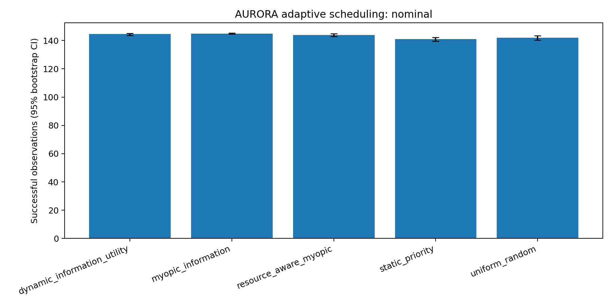
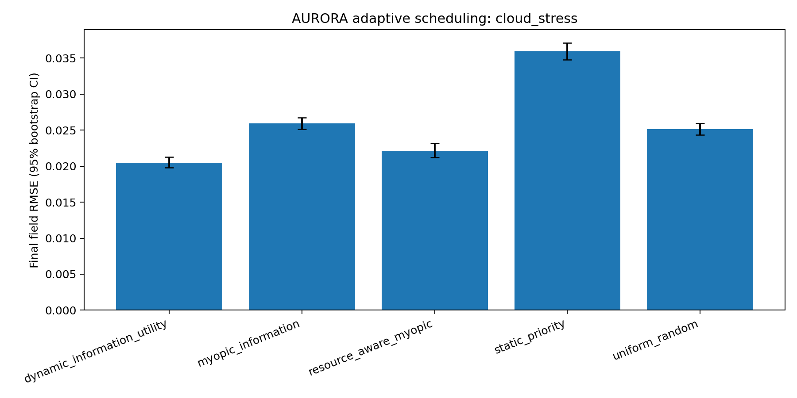
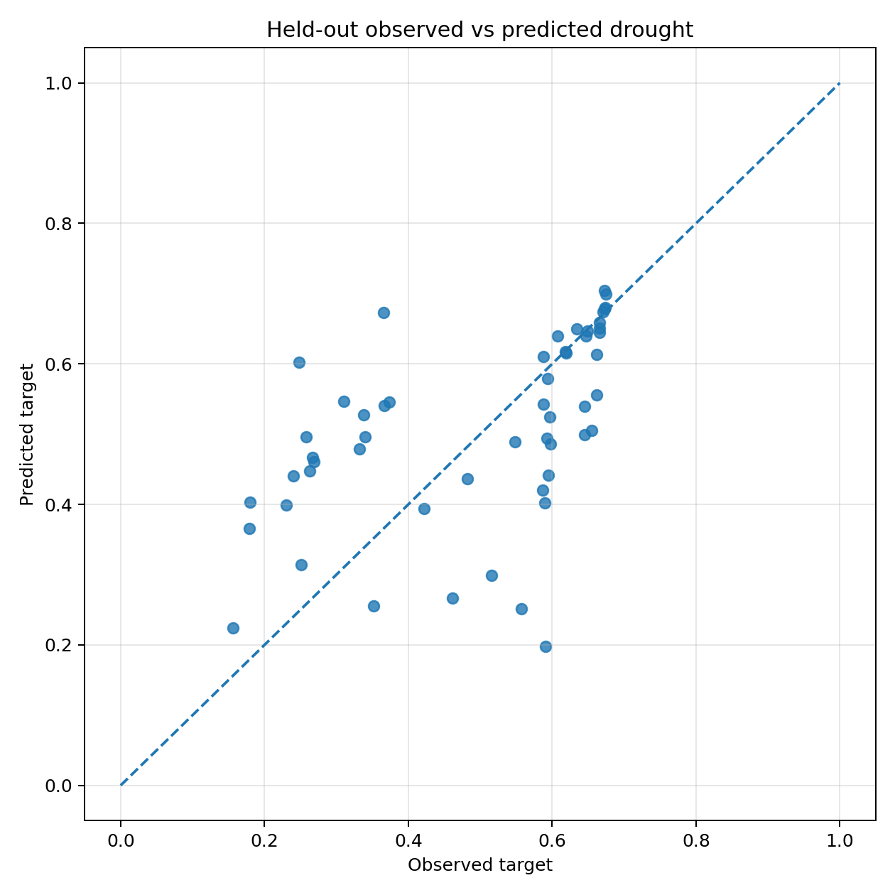

Results gallery
Recorded AURORA mission-planning and drought-model outputs. These are experiment figures, not live spacecraft telemetry.









Recorded AURORA mission-planning and drought-model outputs. These are experiment figures, not live spacecraft telemetry.


